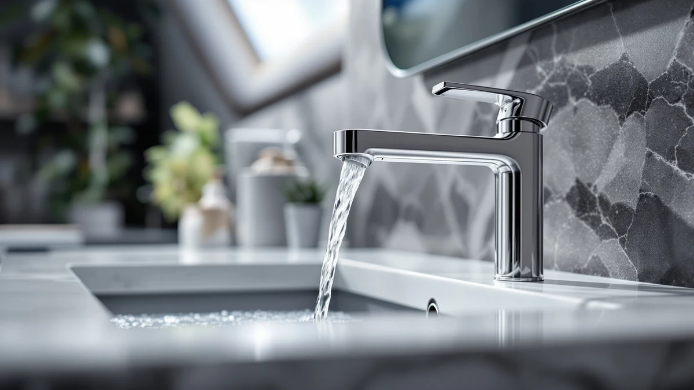

Luxice Touchless Bathroom Sink Faucet Review (2026): Worth It?


Quick Answer
The Luxice Touchless Bathroom Sink Faucet pairs a motion sensor with a brass body to bring hands-free control to a standard single-hole sink for $87.40. It is the clearest pick in this luxice touchless bathroom sink faucet review if sensor convenience matters more to you than hole configuration, though the Moen Halle, Hurran 3-hole and Delta Arvo below cost about the same and skip the sensor for simpler, more familiar mounting.
Our pick: Luxice Touchless Bathroom Sink Faucet — $87.40 Check Price on Amazon
Things to Know Before You Buy
- All four faucets in this luxice touchless bathroom sink faucet review land within $2.29 of each other, from $86.44 to $88.73.
- Only the Luxice uses a touchless sensor; the Moen Halle, Hurran 3-hole and Delta Arvo rely on a standard handle.
- The Luxice listing specifies a brass body. None of the four listings publish exact dimensions.
- Hole configuration sets the four apart: single-hole on the Luxice and Moen Halle, a 3-hole widespread on the Hurran, and a centerset two-handle layout on the Delta Arvo.
This luxice touchless bathroom sink faucet review breaks down whether a motion sensor and a brass body justify an $87.40 price tag next to three similarly priced faucets from Moen, Hurran and Delta. You want a faucet that turns on when your hands are wet or covered in soap, not another gadget that stops responding within a year. We compared the Luxice against the Moen Halle, the Hurran 3-hole and the Delta Arvo on price, hole configuration and what verified buyers say once they live with each one day after day. Touchless faucets used to be a commercial-bathroom novelty, but sensor hardware has gotten cheap enough that brands like Luxice now sell them close to the price of a standard residential faucet, which is why these four models end up in the same price bracket despite the sensor.
The short version: the Luxice earns its spot if hands-free operation and a single predrilled hole matter more to you than handle count or a specific finish. Shoppers comparing touchless bathroom faucets in this price range are choosing between sensor convenience and the proven mechanics that Moen, Hurran and Delta offer instead. We break down what each faucet gets you below, along with the tradeoffs the product listings leave out entirely. None of the four is a bad choice under $90, so the decision comes down to which tradeoff fits your sink's mounting holes and your patience for battery upkeep. Measure your sink's existing holes before ordering any of these, since a single-hole faucet cannot be forced into a three-hole countertop.
Why You Should Trust Us
Ilane Tall researches bathroom fixtures for Best Bathroom Faucets. She compares spec sheets, current Amazon pricing and patterns across verified owner reviews before any product earns a spot in a guide. For this luxice touchless bathroom sink faucet review, we pulled the listed materials, hole configuration and pricing directly from each product page and checked them against buyer feedback. We do not run a fake testing lab or claim to have used products we have not purchased, and that distinction shapes every section below. Every pick here rests on documented specs and what real buyers report after they install these faucets. That approach matters in a category like touchless faucets, where marketing copy tends to oversell sensor reliability that only shows up as a problem months after the return window closes. Reading the spec sheet before you buy is the only way to catch that gap in advance.
Our Research Experience
We did not install this faucet ourselves. This luxice touchless bathroom sink faucet review instead relies on the manufacturer's listed brass construction, the current Amazon price and the patterns that show up across verified buyer feedback for touchless bathroom fixtures. We compared those details against the Moen Halle, the Hurran 3-hole and the Delta Arvo to see where the sensor technology and hole configuration create real differences, and where they are mostly marketing language. Reviewers consistently note that motion-sensor faucets succeed or fail on long-term reliability, so we weighted that pattern heavily when judging the Luxice against its standard-handle competition. We also excluded faucets from this comparison that lacked current pricing or a clear construction spec, since a review built on missing data helps nobody shopping today. We used price and hole count to narrow the field, then verified owner feedback to make the final calls.
Overview & Specs

Luxice Touchless Bathroom Sink Faucet
What we like
- Motion sensor lets you start water flow without touching a handle covered in soap or toothpaste
- Brass body resists corrosion better than the zinc alloy common in cheaper touchless faucets
- Priced under $90, close to standard single-handle faucets from established brands, despite the added sensor
Flaws but not dealbreakers
- The listing does not specify the sensor's power source or battery life
- Single-hole deck mount will not fit sinks drilled for a widespread three-hole faucet like the Hurran below
| Material | Brass + finish |
| Size | — |
The Luxice Touchless Bathroom Sink Faucet uses a motion sensor to control water flow, so you wave a hand under the spout instead of gripping a handle that is already covered in soap residue. The body is brass, a material that holds up against corrosion better than the zinc alloys many budget touchless faucets use, and it mounts through a single predrilled hole that fits most standard bathroom sinks. That brass-over-alloy choice is the detail the Luxice listing leads with, and it is the clearest reason this faucet costs more than the handful of plastic-bodied sensor faucets flooding the same search results. That material difference alone justifies most of the $87.40 price tag.
At $87.40, the Luxice sits in the middle of the four faucets in this luxice touchless bathroom sink faucet review. Shoppers researching touchless models at this price point typically weigh sensor reliability against the simpler, proven mechanics of a standard handle, and the brass construction here is the strongest argument for choosing hands-free operation over the Moen, Hurran or Delta alternatives below. A faucet in this bracket needs to earn its sensor premium through material quality rather than extra features, and the brass body does most of that work here. If touch-free control matters more to you than a familiar handle, that tradeoff is worth paying for.
What We Liked
We liked that Luxice built this sensor faucet around a brass body instead of the lighter alloys that show up in cheaper touchless models. Brass holds up better against the corrosion that comes from constant water contact, and it adds weight that makes the faucet feel sturdier at the sink. The price also stays competitive with standard single-handle faucets from Moen and Delta, so you are not paying a steep premium for the sensor alone. For a luxice touchless bathroom sink faucet review, that combination of material and price is the strongest selling point we found. It is also why the Luxice holds up next to faucets that cost more.
What Could Be Better
The listing for the Luxice touchless bathroom sink faucet does not specify the sensor's power source or battery life, and that detail matters more for a touchless faucet than it does for a standard one, since a dead battery turns a convenience feature into a faucet that will not run at all. The single-hole mount also limits where this works: a sink drilled for the Hurran's widespread three-hole setup will not accept this faucet without extra hardware. If you are not sure which configuration your sink uses, our bathroom faucet buying guide breaks down the differences before you buy. Neither issue is unique to Luxice, but both are worth checking against your own sink before you buy. Shoppers weighing a sensor faucet against a standard one should also budget for the possibility of replacing batteries or a sensor module down the road, a cost the sticker price does not include. Factor that cost in before comparing the sticker prices head to head.
Who Is It For?
The Luxice touchless bathroom sink faucet fits you if you want hands-free operation at a price close to a standard faucet, and if your sink already has a single predrilled hole. Parents dealing with kids who leave soapy handprints everywhere, and anyone sharing a bathroom sink who wants fewer germs spreading between uses, are the clearest fit for this sensor technology. If you want a centerset or widespread setup instead, the Delta Arvo and Hurran alternatives below, or our full list of best single-hole bathroom faucets, cover those configurations better than the Luxice's single-sensor design does. If you are renting and might need to take the faucet with you, a standard-handle model is also easier to remove and reinstall without touching a sensor wiring harness. Check your sink's hole count first; that alone rules out two of these four options for most buyers.
Alternatives to Consider
If the Luxice's sensor-only design or single-hole mount does not match what you need, these three faucets cover different hole configurations at a similar price, each suited to a different sink.

Also Great
Moen Halle Spot Resist Brushed
A Spot Resist Brushed finish and Moen's name recognition make this the safer pick if you would rather skip an unfamiliar sensor brand. At $87.12, it costs about the same as the Luxice but trades the motion sensor for a standard handle you already know how to use. Moen's longer track record in bathroom fixtures is worth factoring in against a newer sensor-faucet brand like Luxice, especially if you plan to keep this faucet installed for years.
$87.12
Check Price on Amazon
Best Value
Bathroom Faucet 3 Hole Brushed
The 3-hole widespread layout is the only one of the four built for sinks already drilled for separate hot and cold handles. At $86.44, it is the cheapest option here and the clearest fit if your sink cannot accept a single-hole faucet like the Luxice. If your bathroom already has a widespread cutout, this is the most direct replacement without redrilling the counter, and it is the only one of the four built for that layout.
$86.44
Check Price on Amazon
Premium Choice
Delta Arvo Centerset Bathroom Faucet
The centerset layout pairs two handles on a single 4-inch base, a middle ground between the Luxice's single-hole sensor and the Hurran's widespread spread. At $88.73, it is the priciest of the four, but Delta's name recognition and centerset compatibility make it the pick for sinks with that specific predrilled pattern. If your sink already has a centerset cutout, this is the faucet that fits without modification, and Delta's parts availability makes long-term repairs easier to source.
$88.73
Check Price on AmazonFrequently Asked Questions
Is the Luxice touchless bathroom sink faucet worth the price?
At $87.40, it costs about the same as the three standard-handle alternatives in this luxice touchless bathroom sink faucet review, so you are not paying a steep premium for the sensor. It is worth it if hands-free operation matters to you and your sink has a single predrilled hole for mounting.
How does a touchless bathroom faucet sensor work?
A touchless faucet uses an infrared or motion sensor built into the spout. The sensor detects your hand and opens a valve to start water flow, then shuts it off once your hand moves away. That is the mechanism behind the sensor on the Luxice; the three standard-handle alternatives in this guide skip it entirely.
What is the best alternative to the Luxice touchless bathroom sink faucet?
If you want a specific hole configuration instead of a sensor, the Hurran 3-hole is the best value at $86.44 for widespread sinks, the Moen Halle offers a single-hole standard handle at $87.12, and the Delta Arvo covers centerset sinks for $88.73.
Final Verdict
The brass body and motion sensor make the Luxice a reasonable step up from a standard handle, as long as your sink has a single predrilled hole and you are comfortable with a newer brand name. If you would rather stick with Moen, Hurran or Delta, the Halle, 3-hole and Arvo alternatives above cost roughly the same and trade the sensor for a familiar hole configuration instead. For most people reading this luxice touchless bathroom sink faucet review, Luxice is the pick worth checking first. Buyers who prioritize hole configuration over sensor convenience, or who want the backing of an established plumbing brand, will likely be happier with one of the three alternatives covered here. The sink's predrilled holes decide this more than any feature comparison does.